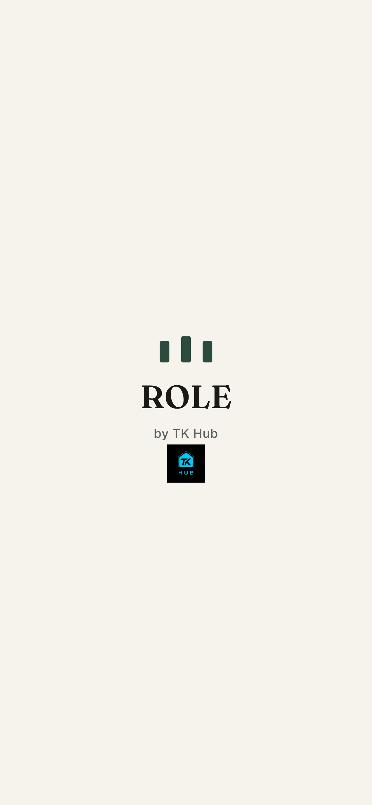
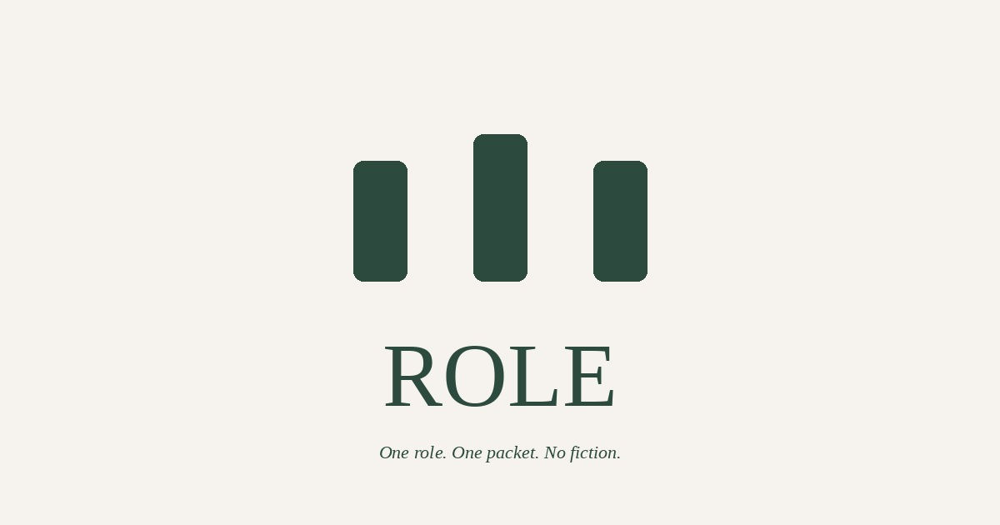

Screenshots from the work-branch build at 3x (phone sharpness). The splash is one screen: the ROLE logo large and centered, then “by TK Hub” with the small TK Hub logo. It shows only while the page or app is really loading and leaves the moment it is ready. On normal and cached loads it never appears; there is no timer and no second screen.

Favicon set: vector SVG (sharp at any size) plus a new 16/32/48 ICO drawn from the vector. Home-screen and install icons 180, 192 and 512 px. Link preview (og:image / twitter:image) 1200×630.
